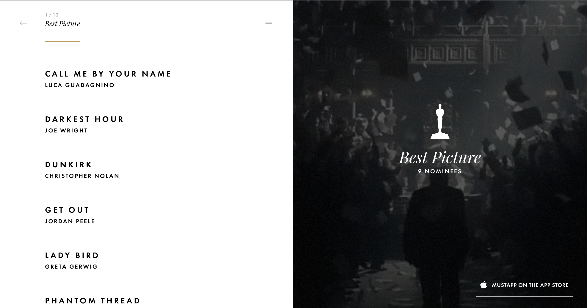
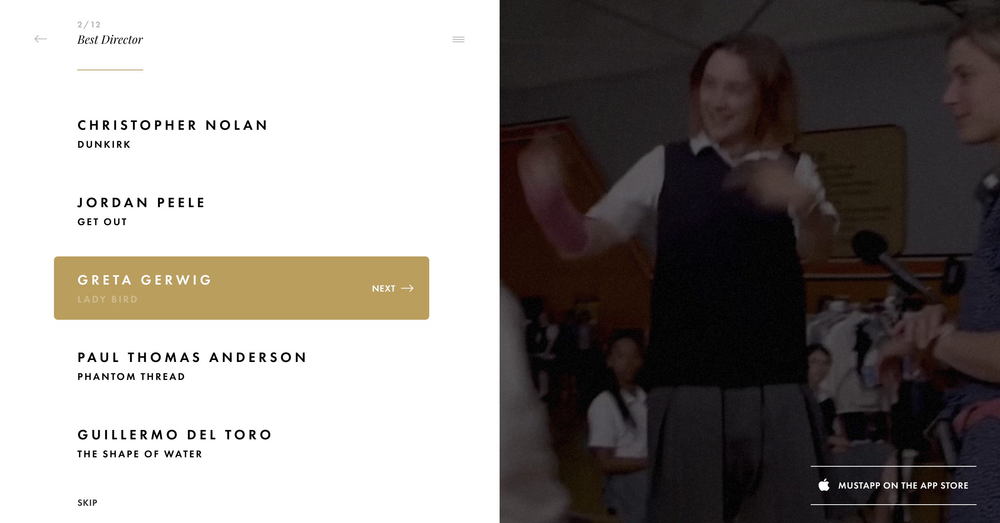
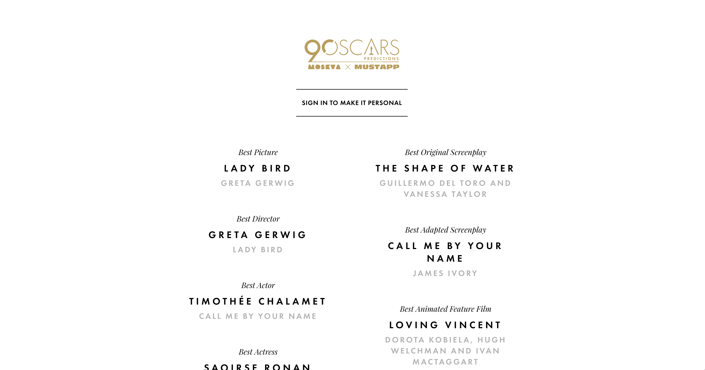
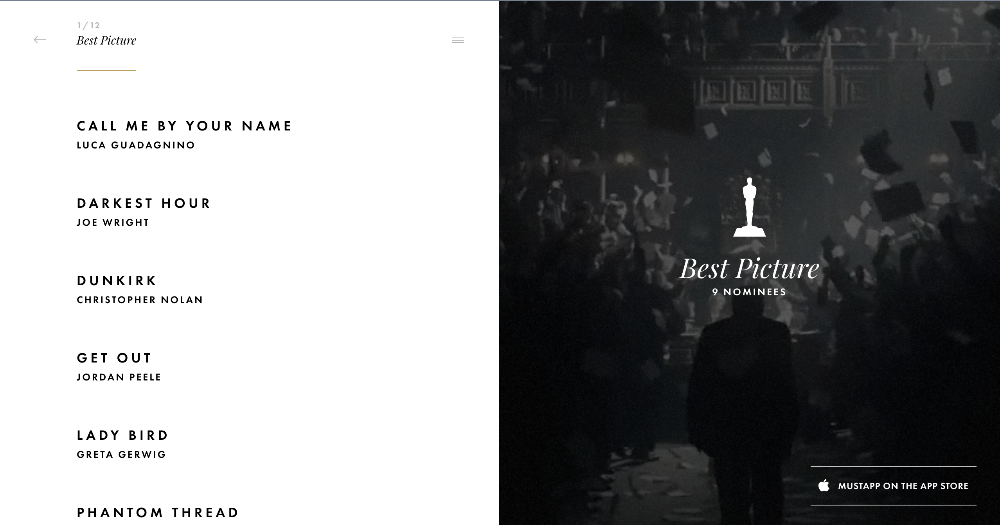
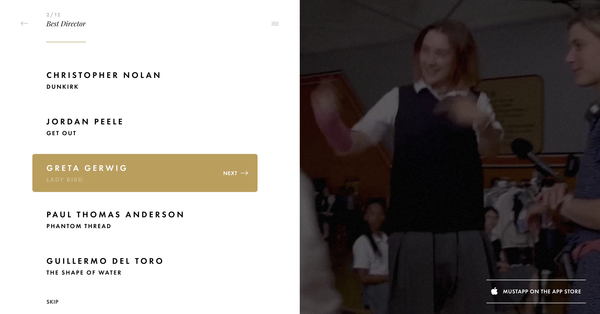
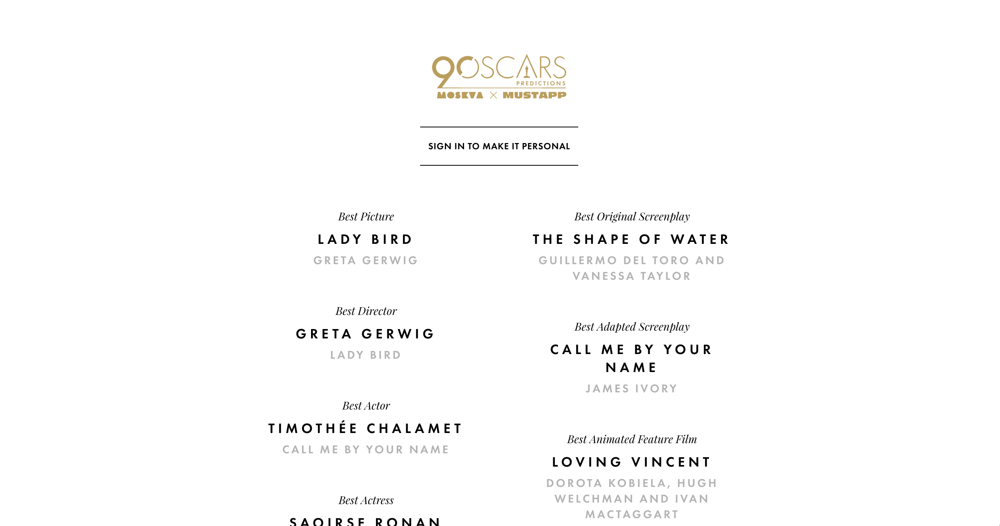

Oscars Predictions
A poll asking your guesses for the winners of this year's Oscars.
This is a really slick way to cast your bets for this year's award season. It's simple, straightforward, and functional, but also has some really nice touches, such as changing the video background to the movie you've most recently selected.
It is a bit annoying that after each choice you make, you're prompted to log in with Facebook, but you can still get through it without giving any information at all.
At the end, it shows you all the choices you made for each category, summing it up nicely.
 




